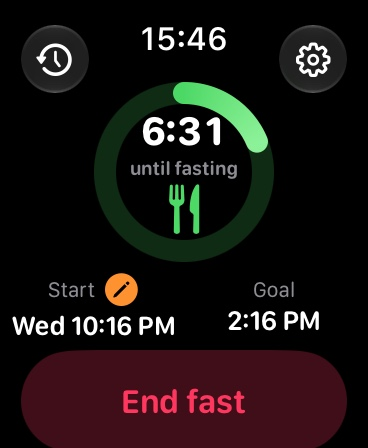
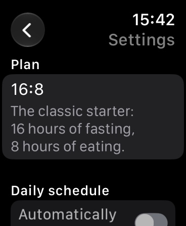
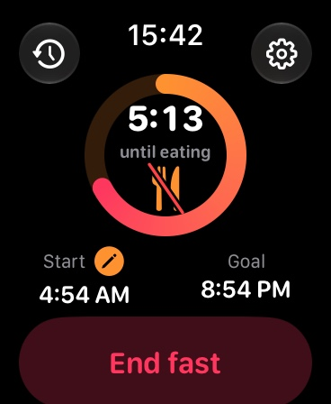

Intermittent fasting timer
Start your fast with one tap, see time left and phase right on your watch face, and get a gentle nudge when it is time to eat. No account, independent of your iPhone.



FastingTracker is the lean intermittent fasting timer for Apple Watch. Everything runs right on your watch: independent of your iPhone, no account, no ads.
Pick a plan, tap "Start fast" and see at a glance how long is left. A colored ring shows progress and phase: fasting, eating window or ready.
Ring, time left and phase right on your watch face: circular, corner, rectangular and as a line of text. The ring runs live without taxing your watch.
If you like, a reminder one hour before your fast ends and when it ends, so you never miss the moment to eat.
Your last 30 fasts, your current streak and how often you reached your goal.
Started too late? Move the start time back to when you really began.
One-time purchase, no subscriptions, no in-app purchases, no ads. All data stays on your watch. No sign-in, no analytics, no tracking.
Note: FastingTracker is not a medical product and does not replace medical advice. Fasting is not suitable for everyone, for example during pregnancy, with eating disorders, diabetes or underweight. If you have a health condition, talk to your doctor first.